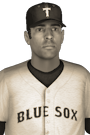

|
|
|  | Top Player Named by Canadian League Sunday, October 16th, 1927 1927 was a very good year for Toronto Blue Sox left fielder Santo Vivas, this season's Canadian League Most Valuable Player Award recipient. Vivas hit .370 with a .444 on-base percentage. He had 149 hits, 36 doubles, 1 triple, 14 home runs, 82 RBIs and scored 77 runs. He received 11 first place votes out of a possible 16. Ambler Stahl of the Ottawa Indians finished second in voting with 1 first place vote, while Seamus Sexauer of the Boston Redcoats finished third with 2 first place votes. Player - Team - First Place - Total Points Santo Vivas - Toronto Blue Sox - 11 - 194 Ambler Stahl - Ottawa Indians - 1 - 140 Seamus Sexauer - Boston Redcoats - 2 - 126 Jason Pelletier - Boston Redcoats - 1 - 114 Zak Salo - Philadelphia Liberty - 1 - 101 Surat Treephan - Wolfeburg Celtics - 0 - 81 Chanchai Albertson - Chicagou White Sox - 0 - 79 Erick Dour - Boston Redcoats - 0 - 25 Ryan Jacobs - Philadelphia Liberty - 0 - 24 Remi Émond - Toronto Blue Sox - 0 - 18 Hackett Corriher - Chicagou White Sox - 0 - 14 Mario Troutman - Toronto Blue Sox - 0 - 10 Edge Rufolo - Baltimore Robins - 0 - 7 Kano Carman - Chicagou White Sox - 0 - 6 Trent Norrell - New York Rebels - 0 - 2 Marc Silva - Wolfeburg Celtics - 0 - 2 Niall O'Reilly - Wolfeburg Celtics - 0 - 1 |   |